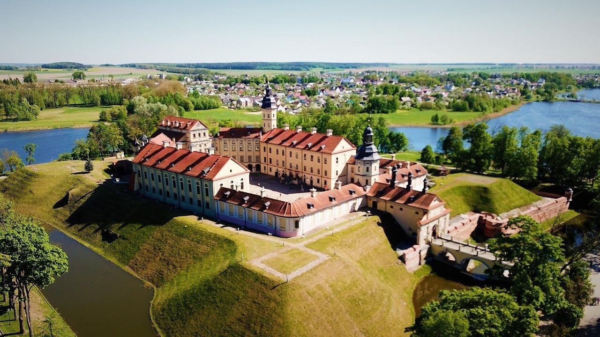
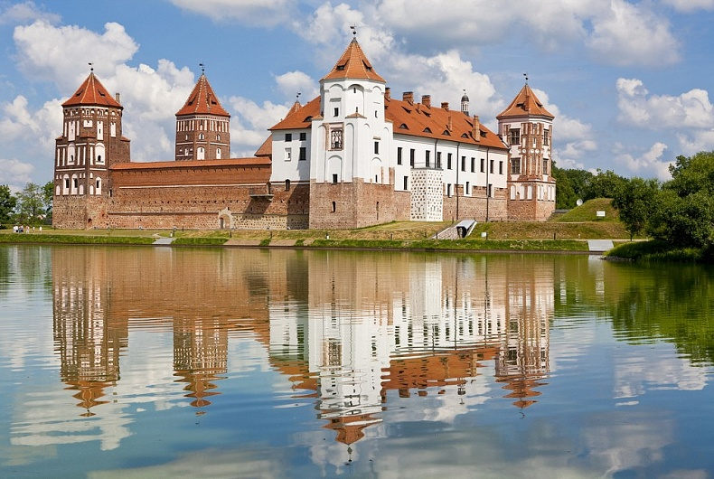
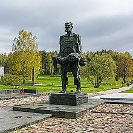
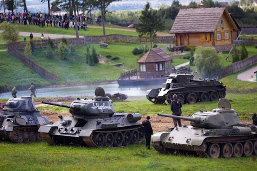
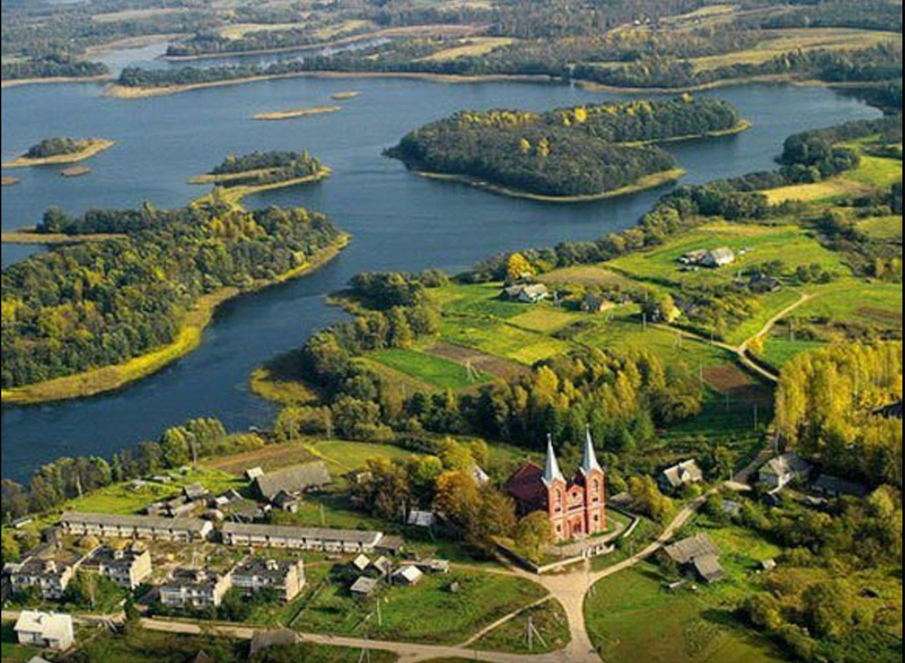
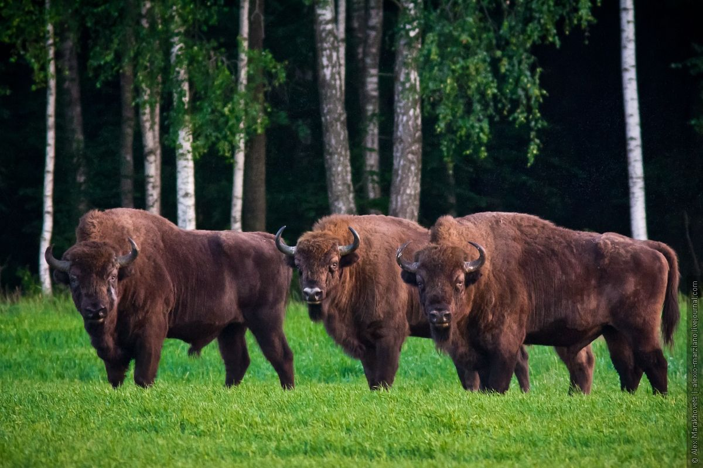
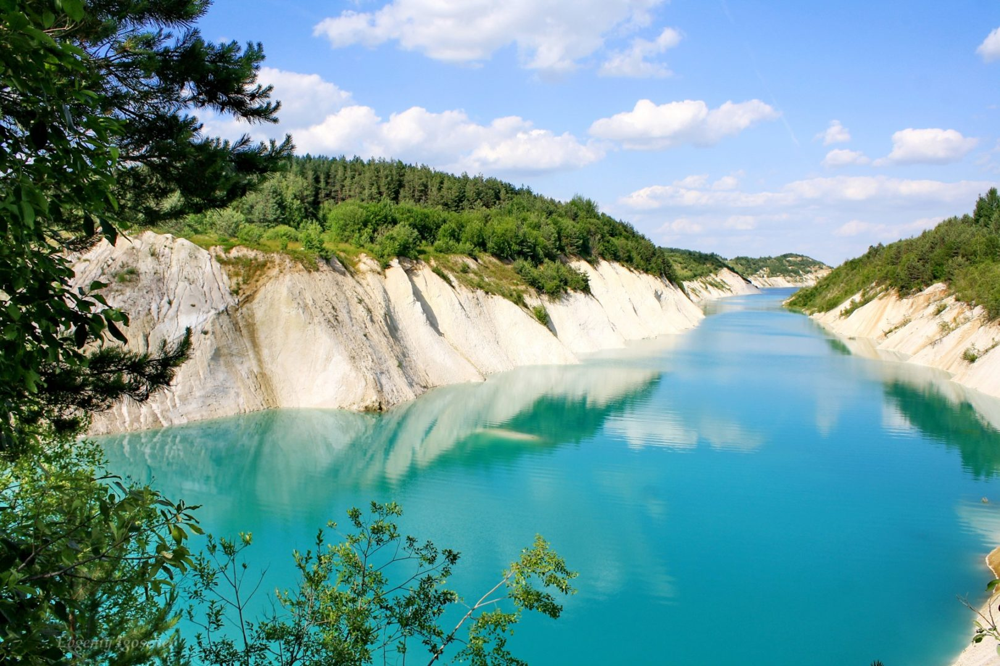

Cultural and Historical Places to Visit in Belarus
Nesvizh Castle
There was no family more powerful in Belarus than the Radziwiłł family – and their castle at Nesvizh was, and still is, one of the most important sites in Belarus. Nesvizh Castle is about 110 kilometers from Minsk and it can be visited as a day trip.  What you’ll find is an incredible castle surrounded by a moat with an enormous complex of rooms that have been expanded over hundreds of years. The castle was built in the 16th century but is now in an excellent condition after being restored and then designated as a World Heritage Site. From the outside, it’s impressive. The castle is on the side of a lake but has its own moat around it. The yellow buildings facing in towards a central courtyard all rise up between the fortifications. It’s what’s inside that is the highlight, though. You can walk through dozens of rooms that show the wealth and the status of the Radziwiłł family, with the grand public rooms and the intimate private areas. This is an incredible insight into the history of Belarus.
Mir
Belarus is often called the “land of castles” due to numerous fortifications built in the 16-17th centuries to protect the territory from enemies. One of the most famous castles in the country is in Mir. It was included into UNESCO Cultural and Natural Heritage sites in 2000. Mir town was part of Poland prior to 1939. You can see some accents of central European architecture in the streets with colorful houses. Nevertheless, the main highlight of the town is Mir castle complex. Mir castle is a combo of three architecture styles: Renaissance, Gothics, and Baroque. It happened due to the change of ruling dynasties who contributed to the construction of different parts of the fortification. The castle suffered in several battles and it was almost burned with the invasion of Charles XII in the 18th century. Despite its complex history, it was opened to the public in 2013 after a complete renovation. Nowadays, the castle also serves as a venue for some cultural events. There is a free entrance to the complex, lake and park. Mir town is part of Grodno region or 1.5 hours drive from Minsk.
Khatyn Memorial Belarus
There are over 8 thousand complexes in Belarus commemorating the victims of World War II, and Khatyn Memorial Complex embodies them all. On March 22, 1943, Nazis in the pursuit of partisans came across the village of Khatyn, and instead of searching for the partisans, they decided to burn the whole village. About 149 people were killed; only two children survived and one adult—Joseph Kaminsky who found the body of his son and carried him out of the ashes.
The main sculpture in the complex is a representation of this event, but it is also not made in the likeness of Kaminsky so as to personify all victims of the war. Concrete foundations represent the homes of Khatyn, and names and ages of the family members are inscribed on the chimneys which are also topped with bells that ring every 30 seconds. There is a village graveyard memorializing 185 villages that were burned down and never rebuilt; a Symbolic Tree of Life lists the names of 433 villages that were burned but later rebuilt. The left side of the complex is lined with commemorative plates naming more than 260 death camps and places of mass extermination in Belarus. Lastly, three birch trees stand alongside an eternal flame burning in the memory of every fourth Belarusian who died in the war.
Stalin Line
Stalin Line is an open-air military museum built on the basis of the Minsk fortified region of the Soviet Union during WWII. There one can examine combat equipment, see evidence of war damage, ride a tank, and even shoot artillery. There are reconstructed machine-gun blockhouses open to tour and recreated foxholes to explore. The main showcase is the famous tanks T-34 and T-34-85, but there is also a host of aircraft and air defense vehicles to view.
Natural Places in Belarus
Braslaw Lakes
If you find yourself in Belarus in the summertime and you’re looking for a place to cool down, consider going to the Braslaw lakes and national park. It’s a large forested area with some 30 large and small interconnected lakes that snuggle the borders of Latvia and Lithuania.
Belavezhskaya Pushcha
Close to Brest (around 70km north) is the renowned Belavezhskaya Pushcha National Park. This dense and lush forest is home to the European bison and has played a significant part in the history of Central and Eastern Europe. The forest is shared with Poland (referred to as Białowieża Forest in Poland). New rules came into effect in 2018 and citizens of 77 countries can visit Brest for 10 days without a visa. Belavezhskaya Pushcha National Park is a UNESCO World Heritage Site.
Chalk Pits
There are several places in Belarus, where you can find them. Most beautiful are the ones in Krasnoselsk township near the town of Volkovysk. There are also chalk pits near Soligorsk and Bereza. Four chalk pits near Volkovysk are the most popular among tourists and locals. They are also called “Belarusian Maldives”. “Belarusian Maldives” appeared after the mining of chalk or limestone, which resulted in such turquoise water. Turquoise-blue water and white cliffs make this place attractive primarily with its views. Krasnoselsk and other chalk pits are considered to be a technological area, and access here is limited. But when the summer comes, numerous curious people and romantics rush to this place to enjoy the wonderful view. It is hard to resist the temptation to see the “Belarusian Maldives” driving just a couple of hundred or even dozen kilometers. It is an incredible experience to stay overnight in a tent near such a miracle.
Go back up